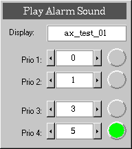
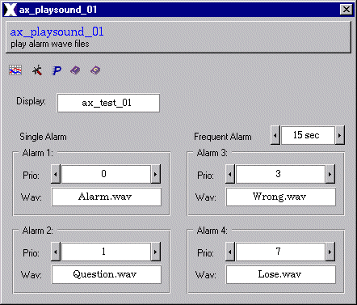
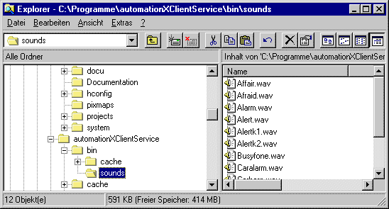

| ax_playsound |
The basic conditions for the ax_playsound class are:
The ax_playsound class is a supplement
of the axclientservice and the axsoundserver.
The ax_playsound class includes following
features:
For each alarm type it is possible
to make two combinations between priorities and .wav-files.
Features | Installation | User Interface | Implementation Notes
The ax_playsound class is comprised of the
following components (files):
| Class Component | Description | File Name(s) |
| Class File | Includes the process picture representation and any popup menus. | ax_playsound.symbol |
| Graphic Files | Class Specific Graphic Files for both, class definition and documentation | some documentation graphics |
| HTML Document | HTML document for Online Help. | ax_playsound.htm |
Installation: The class color file, the class file, the graphic files and the HTML-Document file must be copied into a common sub directory within the project's "classlib" directory. The name of the common directory can be chosen freely.
The axclientservice + the axsoundserver have to be installed.
Features | Installation | User Interface | Implementation Notes | Time Control Program
The ax_playsound class graphical user interface includes:
The circles next to the edit-values denote
the state of the play_sound# variables:
If the circle is filled green, the sound
associated to the defined and existing priority is played. Otherwise the
defined priority is not existing respectively the alarm sound is not played.

Figure 1: Graphical Representation
2. Operator PopUp
The Operator PopUp is shared into three
sections:

Figure 2: Operator Popup
Features | Installation | User Interface | Implementation Notes
SlowSPS - Basic condition
The SlowSPS has to run as a condition for
the executability of the ax_playsound class.
For checking the state of the SlowSPS
you have to open the Popup of the Soft PLC Panel at the aX-Server window.
If the SlowSPS is not running you have
to enter the following entry in the UserProcesses.pls:
:name=slowsps autostart=True restart=True
Storage directory - .wav-files
The .wav-files have to be stored in the
following directory:
.\automationXClientService\bin\sounds

Figure 3: Storage directory
of the .wav-files
Features | Installation | User Interface | Implementation Notes